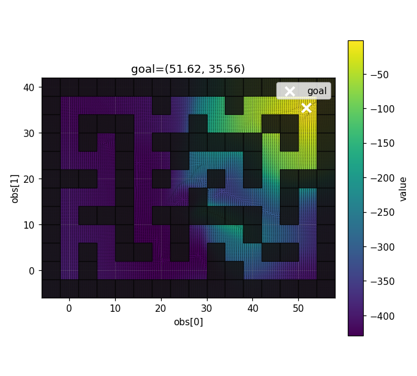
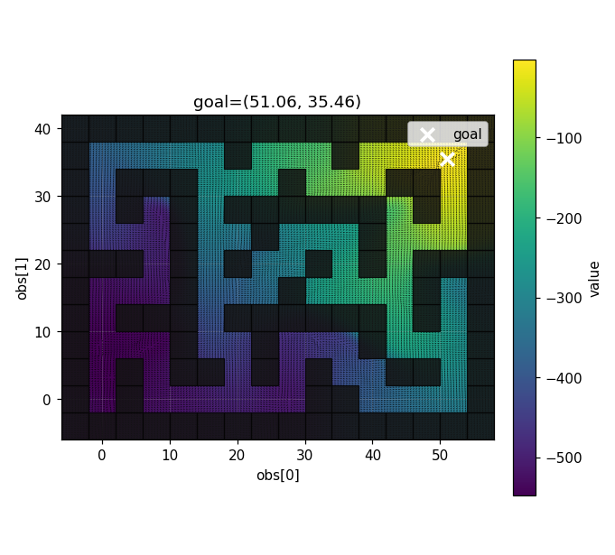
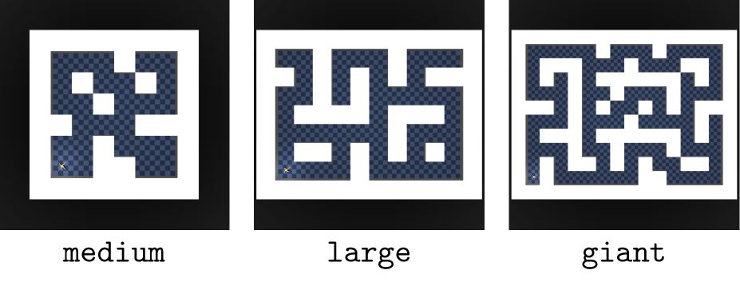
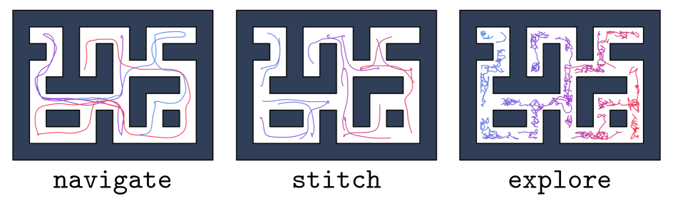

Abstract
Offline goal-conditioned reinforcement learning (GCRL) aims to learn a policy that reaches commanded goals using only a fixed dataset of previously collected trajectories. This setting is difficult in long-horizon navigation tasks because sparse goal rewards provide weak supervision, while offline training prevents the agent from correcting bad subgoal choices through online exploration. Hierarchical Implicit Q-Learning (HIQL) addresses this by decomposing control into a high-level policy that proposes subgoals and a low-level policy that executes primitive actions toward those subgoals.
We improve HIQL by adding a hierarchical value loss. The central idea is that a long-horizon value estimate should agree with a decomposition through intermediate subgoals: reaching a distant goal directly should have a value compatible with first reaching a useful subgoal and then reaching the final goal. This gives the value function a more compositional notion of distance, which is important when offline trajectories must be stitched together without new environment interaction. On OGBench maze tasks, this approach substantially improves over the original HIQL baseline on the completed PointMaze and AntMaze evaluations, especially on large and giant stitching or exploration tasks.
Method
Offline Goal-Conditioned RL
In goal-conditioned RL, the policy receives the current observation $s$ and a goal observation $g$, then outputs an action $a \sim \pi(a \mid s,g)$. In the offline setting, learning uses a static dataset $\mathcal{D}$ of trajectories and cannot collect new transitions. For OGBench-style goal-reaching tasks, the reward is sparse and negative:
The learned value $V(s,g)$ can be interpreted as a negative distance-to-goal estimate. When $\gamma=1$, a value near $-k$ means the goal is approximately $k$ steps away under the learned behavior. Training samples goals from three sources: the current state, a future state in the same trajectory, or a random state from the dataset. This mixture gives positive near-goal examples, reachable trajectory goals, and harder cross-trajectory goals.
Original HIQL
HIQL learns a goal-conditioned value function and two policies:
- A low-level policy $\pi_{\mathrm{low}}(a \mid s,h)$ that maps the current observation and a local subgoal $h$ to primitive actions.
- A high-level policy $\pi_{\mathrm{high}}(h \mid s,g)$ that maps the current observation and final goal to an intermediate subgoal.
The value function is trained with Implicit Q-Learning-style expectile regression. With a target value network $V^-$, the one-step target is
where $m$ is the continuation mask. The expectile loss is
and the value loss minimizes the asymmetric squared error between $V(s,g)$ and the target $q$.
Both policies are trained by advantage-weighted behavior cloning. For the low-level actor, the advantage measures whether the dataset action moves the agent closer to the local subgoal:
For the high-level actor, the advantage measures whether a candidate subgoal improves the value toward the final goal:
The log-likelihood of dataset actions or subgoals is weighted by an exponential transform of these advantages, so behavior that improves goal reachability receives larger updates.
Latent Observation and Goal Embeddings
We introduce a learned observation encoder
which maps every raw observation to a compact latent state. Goals are encoded by the same function, so the current observation and final goal can be compared in a shared representation space. This latent space is intended to capture reachability structure: observations that are close in terms of goal-reaching behavior should have useful relative positions in the embedding.
The goal-conditioned value function is defined over the current latent state and latent goal:
The low-level policy receives the raw observation and a relative latent subgoal:
This keeps primitive action prediction grounded in the original observation while giving the policy a compact direction in representation space. The high-level policy receives the raw observation and final goal embedding, predicts a latent displacement, and adds it to the current embedding to obtain an absolute latent subgoal:
At evaluation time, the agent first estimates whether the final goal is already within the low-level horizon. If it is nearby, the low-level policy directly follows the final goal direction. If it is farther away, the high-level policy proposes an intermediate latent subgoal.
Hierarchical Value Loss
The main additional training signal asks the value function to agree with decompositions through intermediate latent states. The standard value update learns $V(z,z_g)$ from one-step Bellman targets. The hierarchical value loss adds the constraint that reaching a faraway goal through an intermediate subgoal should have a value compatible with the two shorter segments.
For a batch of embeddings, we sample latent subgoals and latent final goals:
The target value network estimates three quantities:
With $\gamma=1$, the value has a distance interpretation, so the composed target for going from $z$ to $z_G$ through $z_h$ is
The target is clamped at zero because successful goal-reaching values should not become positive:
The current value estimate $V(z,z_G)$ is trained with expectile regression toward this composed target:
This objective makes the value function more coherent as a learned navigation metric: the predicted cost from a state to a goal should be compatible with the cost of reaching an intermediate subgoal and then the final goal. This is especially useful in offline datasets where successful long trajectories may need to be assembled from shorter trajectory fragments.
Value Heatmaps
PointMaze Giant Stitch
The following heatmaps compare value estimates with and without the hierarchical value loss on PointMaze giant stitch.


Experiments
OGBench
OGBench is a benchmark suite for offline goal-conditioned RL. It provides fixed datasets and standardized evaluation tasks where the agent must reach commanded goals without online data collection.
We evaluate on 3 maze sizes (medium, large, giant) with different difficulty levels. Medium, large, and giant increase the spatial scale and horizon length.

The dataset has three styles that vary in how trajectories are distributed through the maze:
- Navigate: trajectories are mostly directed paths through the maze, giving clearer examples of goal-reaching behavior.
- Stitch: trajectories cover useful local segments, but solving the full task requires combining segments that are not provided as one complete path.
- Explore: trajectories are noisier and less directed, so the agent must infer goal-reaching behavior from broad exploratory coverage.

Results
| Environment | Type | Size | GCBC | GCIVL | GCIQL | QRL | CRL | HIQL | OTA | Ours |
|---|---|---|---|---|---|---|---|---|---|---|
| PointMaze | navigate | medium | $9 \pm 6$ | $63 \pm 6$ | $53 \pm 8$ | $82 \pm 5$ | $29 \pm 7$ | $79 \pm 5$ | $\mathbf{86} \pm 2$ | 98 |
| large | $29 \pm 6$ | $45 \pm 5$ | $34 \pm 3$ | $\mathbf{86} \pm 9$ | $39 \pm 7$ | $58 \pm 5$ | $85 \pm 5$ | 98 | ||
| giant | $1 \pm 2$ | $0 \pm 0$ | $0 \pm 0$ | $68 \pm 7$ | $27 \pm 10$ | $46 \pm 9$ | $\mathbf{72} \pm 6$ | 93 | ||
| stitch | medium | $23 \pm 18$ | $70 \pm 14$ | $21 \pm 9$ | $80 \pm 12$ | $0 \pm 1$ | $74 \pm 6$ | $\mathbf{75} \pm 5$ | 96 | |
| large | $7 \pm 5$ | $12 \pm 6$ | $31 \pm 2$ | $84 \pm 15$ | $0 \pm 0$ | $13 \pm 6$ | $\mathbf{66} \pm 8$ | 87 | ||
| giant | $0 \pm 0$ | $0 \pm 0$ | $0 \pm 0$ | $50 \pm 8$ | $0 \pm 0$ | $0 \pm 0$ | $\mathbf{52} \pm 7$ | 100 | ||
| AntMaze | navigate | medium | $29 \pm 4$ | $72 \pm 8$ | $71 \pm 4$ | $88 \pm 3$ | $95 \pm 1$ | $\mathbf{96} \pm 1$ | $\mathbf{96} \pm 1$ | 96 |
| large | $24 \pm 2$ | $16 \pm 5$ | $34 \pm 4$ | $75 \pm 6$ | $83 \pm 4$ | $91 \pm 2$ | $\mathbf{92} \pm 1$ | |||
| giant | $0 \pm 0$ | $0 \pm 0$ | $0 \pm 0$ | $14 \pm 3$ | $16 \pm 3$ | $65 \pm 5$ | $\mathbf{77} \pm 4$ | |||
| stitch | medium | $45 \pm 11$ | $44 \pm 6$ | $29 \pm 6$ | $59 \pm 7$ | $53 \pm 6$ | $\mathbf{94} \pm 1$ | $93 \pm 1$ | 95 | |
| large | $3 \pm 3$ | $18 \pm 2$ | $7 \pm 2$ | $18 \pm 2$ | $11 \pm 2$ | $67 \pm 5$ | $\mathbf{84} \pm 3$ | 92 | ||
| giant | $0 \pm 0$ | $0 \pm 0$ | $0 \pm 0$ | $0 \pm 0$ | $0 \pm 0$ | $2 \pm 2$ | $\mathbf{37} \pm 6$ | 72 | ||
| explore | medium | $2 \pm 1$ | $19 \pm 3$ | $13 \pm 2$ | $1 \pm 1$ | $3 \pm 2$ | $37 \pm 10$ | $\mathbf{94} \pm 3$ | 98 | |
| large | $0 \pm 0$ | $10 \pm 3$ | $0 \pm 0$ | $0 \pm 0$ | $0 \pm 0$ | $4 \pm 5$ | $\mathbf{75} \pm 16$ | 99 | ||
| HumanoidMaze | navigate | medium | $8 \pm 2$ | $24 \pm 2$ | $27 \pm 2$ | $21 \pm 8$ | $60 \pm 4$ | $89 \pm 2$ | $\mathbf{94} \pm 1$ | |
| large | $1 \pm 0$ | $2 \pm 1$ | $2 \pm 1$ | $5 \pm 1$ | $24 \pm 4$ | $49 \pm 4$ | $\mathbf{83} \pm 2$ | |||
| giant | $0 \pm 0$ | $0 \pm 0$ | $0 \pm 0$ | $1 \pm 0$ | $3 \pm 2$ | $12 \pm 4$ | $\mathbf{92} \pm 1$ | |||
| stitch | medium | $29 \pm 5$ | $12 \pm 2$ | $12 \pm 3$ | $18 \pm 2$ | $36 \pm 2$ | $88 \pm 2$ | $\mathbf{88} \pm 2$ | ||
| large | $6 \pm 3$ | $1 \pm 1$ | $0 \pm 0$ | $3 \pm 1$ | $4 \pm 1$ | $28 \pm 3$ | $\mathbf{57} \pm 3$ | |||
| giant | $0 \pm 0$ | $0 \pm 0$ | $0 \pm 0$ | $0 \pm 0$ | $0 \pm 0$ | $3 \pm 2$ | $\mathbf{79} \pm 3$ |
On PointMaze, the proposed method reaches 93-100 success across all reported medium, large, and giant tasks. The largest gains appear on the difficult stitch settings: original HIQL scores 0 on PointMaze giant stitch, while our method reaches 100. This supports the motivation of the hierarchical value loss: when successful behavior must be assembled from partial trajectories, a compositional value estimate can better evaluate useful intermediate subgoals.
On AntMaze, the method matches strong baselines on medium navigation and improves substantially on stitching and exploration. In particular, AntMaze giant stitch improves from 2 for HIQL and 37 for OTA to 72 for our method. AntMaze large explore also improves from 4 for HIQL and 75 for OTA to 99. These gains are strongest in settings where the agent must reason over long paths and intermediate waypoints rather than imitate a single complete demonstration.
HumanoidMaze entries are left blank for our method because those runs were not completed in the current result table. This remains the main missing evaluation needed before making a full benchmark-level claim.
Conclusion
The proposed method improves long-horizon offline GCRL by making the value function consistent under subgoal decomposition. Instead of learning only from one-step Bellman targets, the value function is also trained with a hierarchical value loss over paths that pass through intermediate subgoals. This directly targets the main challenge in offline hierarchical goal-reaching: evaluating whether a candidate subgoal forms a useful bridge toward a distant final goal.
The completed PointMaze and AntMaze experiments show strong gains over original HIQL and often outperform OTA, especially on large, giant, stitch, and explore tasks. The remaining limitation is evaluation coverage: HumanoidMaze results should be completed, and future ablations should isolate the contribution of the hierarchical value loss.
Training Details
| Learning rate | $3e^{-4}$ |
|---|---|
| Optimizer | Adam |
| Mini-batch size | 1024 |
| Total gradient steps | 500000 |
| MLP dimensions | [512, 512, 512] |
| Activation | GELU |
| Target network smoothing coefficient | 0.005 |
| Discount factor | 1.0 |
| Expectile | 0.7 |
| Hierarchical expectile | 0.7 |
| Value goal sampling ratio (current, trajectory, random) | (0.2, 0.5, 0.3) |
| Actor goal sampling ratio (trajectory, random) | (0.5, 0.5) for navigate and stitch, (0.0, 1.0) for explore |
| Subgoal horizon | 30 steps for PointMaze and AntMaze, 100 steps for HumanoidMaze |